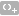

筛选向导
筛选向导让你快捷地为你的数据网格创建及应用指定的筛选条件。此外，它更可让你保存筛选条件到一个配置文件以备日后使用。在工具栏点击  来启用筛选。
来启用筛选。
创建筛选
若要添加一个新的条件到准则，只需简单地点击 。如果你需要在括号内添加条件，点击 。
【提示】若要在现有的条件添加括号，只需简单地按住 Control 键并点按已选择的条件，然后选择“使用括号分组”。若要移除括号，请右击括号并选择“删除括号”或“删除括号和条件”。
点击字段名（复选框旁）并从列表中选择一个字段。
-
点击运算符（字段名旁）并选择一个筛选运算符。你可以从列表中选择“[自定义]”来手动输入准则。
筛选运算符
结果
=
字段等于“值”。
!=
字段不等于“值”。
<
字段小于“值”。
<=
字段小于或等于“值”。
>
字段大于“值”。
>=
字段大于或等于“值”。
包含
字段包含“值”。
包含（不区分大小写）
字段包含“值”（不区分大小写）。
仅适用于 PostgreSQL。不包含
字段不包含“值”。
不包含（不区分大小写）
字段不包含“值”（不区分大小写）。
仅适用于 PostgreSQL。开始以
字段以“值”开头。
开始不是以
字段不以“值”开头。
结束以
字段以“值”结尾。
结束不是以
字段不以“值”结尾。
是 null
字段是 NULL。
不是 null
字段是 NOT NULL。
是空的
字段是空的。
不是空的
字段不是空的。
介于
字段在“值1”和“值2”之间。
不介于
字段不在“值1”和“值2”之间。
在列表
字段在（“值1”、“值2”、...）列表中。
不在列表
字段不在（“值1”、“值2”、...）列表中。
存在
字段是存在。
仅适用于 MongoDB。不存在
字段不存在。
仅适用于 MongoDB。是字段类型
字段类型是“值”。
仅适用于 MongoDB。不是字段类型
字段类型不是“值”。
仅适用于 MongoDB。 点击“?”来打开适当的编辑器并输入准则值。准则值框使用的编辑器是由字段的数据类型决定。
【提示】对于 MongoDB，你可以在准则值框中更改编辑器类型。
点击逻辑运算符框（准则值旁）并选择“and”或“or”。
重复步骤 1-5 来添加另一个新条件。
点击 来看筛选结果。
【提示】如果要反转条件的含义，简单地按住 Control 键并点按已选择的条件，然后选择“切换否定符”。
保存配置文件
你可以保存筛选准则到配置文件以备日后使用。只需简单地按住 Control 键并点按筛选向导，然后选择“加载配置文件”、“删除配置文件”、“保存配置文件”或“另存配置文件为”。